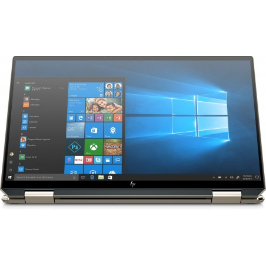
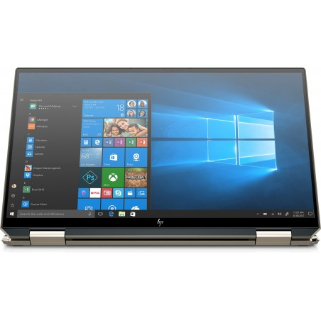

DISEÑO ELEGANTE Y BIEN REMATADO
HP repite diseño en sus modelos más representativos dentro del sector de los ultrabooks.
El nuevo Spectre X360 14 presenta pocas novedades en el aspecto exterior destacando
los siguientes niveles de acabado:
- Fabricación en aluminio con tratamiento mate que soporta muy bien las huellas
- Bastante compacto y presenta un peso de solo 1.3 kg.
- El signo de distinción más destacado es el dorado de sus bordes, también presente en logo y bisagras
- La pantalla se abate completamente, recordad que estamos ante un modelo convertible en el que
podemos colocar la pantalla completamente girada sobre el teclado. - Ver imágen.
{kind=link}
ESPECTACULAR EQUILBRIO EN PANTALLA
Sin renunciar a un diseño compacto, el HP Spectre X360 alcanza una diagonal
de pantalla de 13.5 pulgadas donde la reducción de los marcos es considerable.
Esta versión incluye un panel IPS con resolución 1080p pero hay disponible un
espectacular modelo con panel OLED 3K2K. La pantalla es muy equilibrada.
Es un panel 100% sRGB con protección Corning Gorilla Glass NBT y por supuesto,
táctil.
Ofrece muy buenos ángulos de visión y cumple a la perfección con su propósito general.
 

CONECTIVIDAD
- Intel Wi-Fi 6 AX 201 (2 x 2)
- Bluetooth 5
- 2 USB-C con Thunderbolt 4(velocidad de señal de 40 Gb/s, Power Delivery 3.0)
- 1 USB 3.1 Gen 2 de tipo A (HP Sleep and Charge)
- Ranura microSD
- Combo micrófono y auriculares
| HP Envy X360 | HP Spectre X360 | |
|---|---|---|
| Pantalla | 13'3 pulgadas, 1080 p | |
| Procesador | AMD Ryzen 5 4500U | CPU Intel Core i7-1065G7 |
| RAM | 8GB | 16GB |
| Almacenamiento | 512 GB | 1024 GB SSD |
| GPU | Gráficos AMD Radeon | Intel Iris Plus |
| Puertos | 2 USB 3.1 Tipo A | USB 3.1 Tipo-A |
| USB-C | 2 Thunderbolt 4 | |
| tarjeta microSD | tarjeta microSD | |
| auriculares | auriculares | |
| Precio | 1.099 € | 1.600 € |